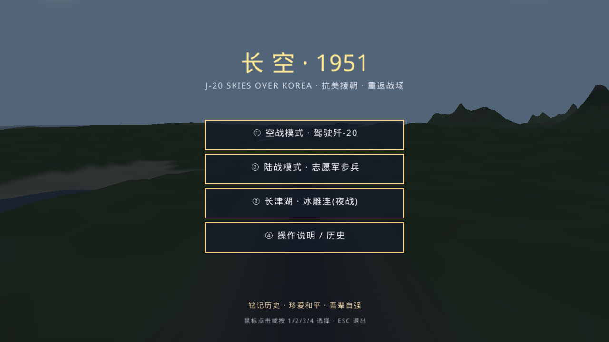
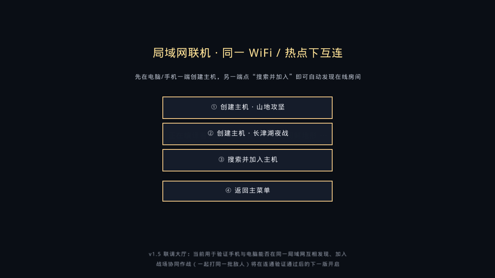
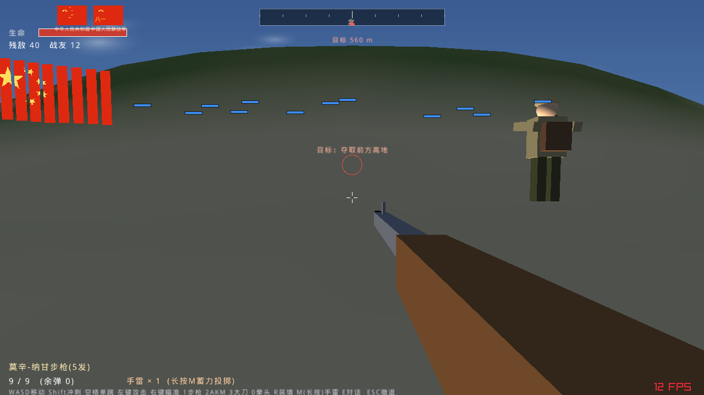
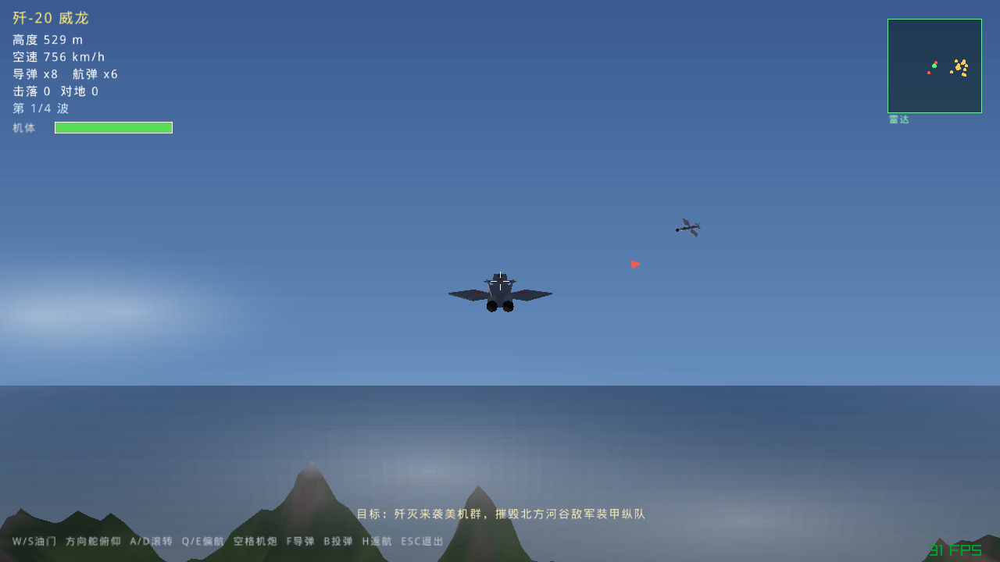
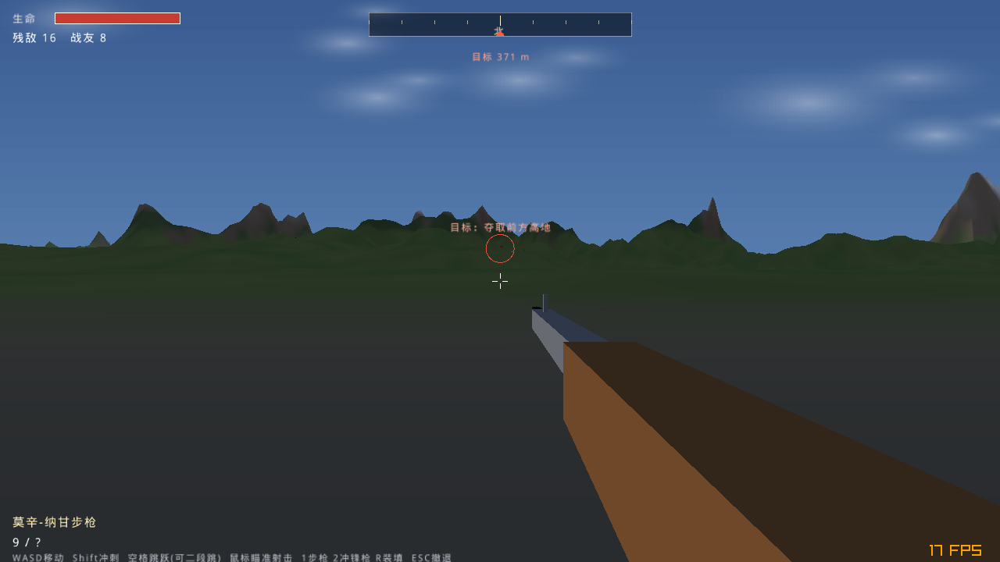
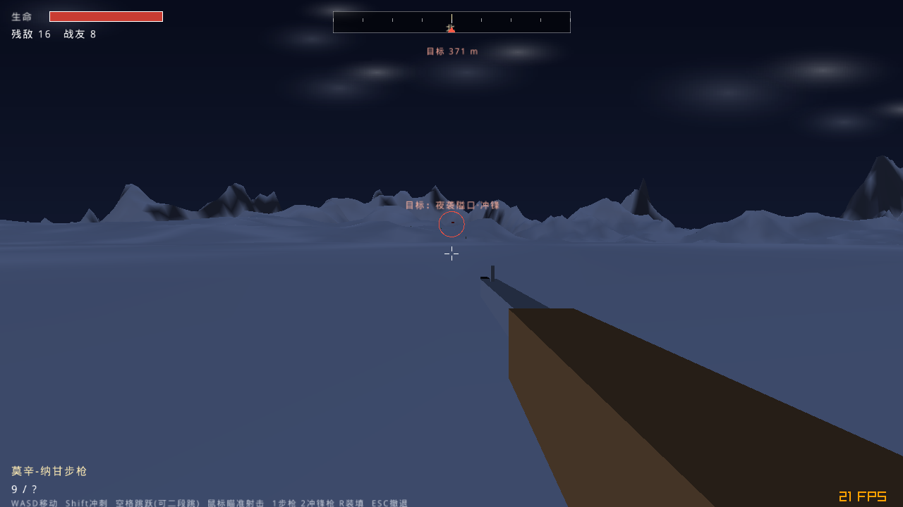

两种模式，多种结局。空战对地支援、夺取制空权；陆战与 AI 战友协同夺取高地，胜负与牺牲均有历史结语。
主机点“开始战斗”后双方进入同一战场：能看到彼此的志愿军身体、同一批 40 名敌军与 12 名战友，一起冲锋开火夺旗。采用主机权威：移动由主机模拟，命中、血量、阵亡、胜负以主机为准，客户端实时收到世界快照。已用两个真实游戏进程端到端验证。
主菜单第⑤项。两台设备连同一 WiFi / 热点：一端“创建主机”，另一端“搜索并加入”即自动发现在线房间、分配战友编号、显示在线人数。手机↔电脑、手机↔手机、电脑↔电脑通用。
追尾飞行、失速与返航；机炮、锁定导弹、投弹，迎击多波 F-86 与地面装甲纵队。
第一人称冲锋，莫辛-纳甘步枪与 AKM，机瞄狙击镜、真实上跳后坐力，与战友冲锋夺旗。
独立夜战关卡：冷月雪原、深蓝寒夜光照，卧雪潜伏、号响冲锋，专属“冰血隘口 / 军魂永驻”结局。
步枪共5发、AKM共100发，打光即空仓无法再补；狙击爆头一枪致命，腿/躯干约半血。3 大刀、0 拳头近战，每人1颗手雷长按 M 蓄力按抛物线投出。
敌人头顶红条、战友头顶蓝条；胜利时班长（牺牲则随机一名战友）冲上高地插五星红旗、吹冲锋号。营地升起国旗与八一军旗，跑步有脚步声，可靠近伤员听遗言。步兵按史实只做单跳跃进。
沿飞行轨迹逐段采样地形，高速不再隧穿山体；地面废弃战车也成为实体障碍。
柏林噪声生成雪山、森林与海面；昼夜两套光照、距离雾、火焰爆炸曳光粒子与程序化音效。
敌机、步兵、战友均为内置状态机，无需联网，安装即玩。
以下为程序实际运行截图。






前往 Release 页面 下载。
下载 J20_Skies1951.exe，64 位绿色单文件，双击运行（会带一个控制台日志窗）。
下载 J20_Skies1951.apk，一个包同时支持 64 位与 32 位，需 Android 7.0 及以上。
微信会把 APK 改名 .apk.1。请下载 安卓安装包.zip，解压后再安装，或把文件名末尾的 .1 删除。
| 平台 | 动作 | 按键 / 触屏 |
|---|---|---|
| 电脑 | 陆战移动 / 视角 / 射击 | WASD / 鼠标 / 左键；右键开镜，P 暂停 |
| 空战姿态 / 油门 | 方向键与 QE / W S；空格机炮，F 导弹，B 投弹，H 返航 | |
| 切枪 / 装填 | 1、2 / R | |
| 手机 | 移动 / 视角 | 左下摇杆（上推前进）/ 右半屏拖动（带防误触死区） |
| 射击 / 瞄准 / 其它 | “火”射击、“镜”开镜、“弹”“炸”“换”，左上“暂停” |
游戏为纯 C，基于 raylib（zlib 许可）。仓库提供源码与免 gradle 的安卓出包脚本；引擎源码与各平台预编译库见完整版压缩包（Release 内）。